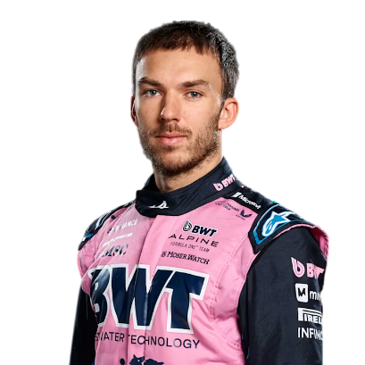
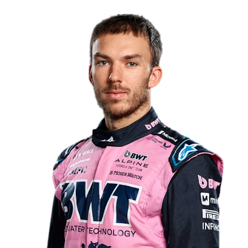

BWT Alpine Renault F1
La historia del equipo Renault-Alpine en la Fórmula 1 es un relato de persistencia, evolución y la búsqueda continua del éxito, marcada por cambios de nombre y épocas de dominio tanto como constructor como proveedor de motores. Es una saga que entrelaza la identidad de la marca automotriz Renault con su línea de coches deportivos Alpine.
La Era Pionera de Renault (1977-1985)
La primera incursión de Renault como equipo de fábrica en la Fórmula 1 se dio en 1977. Fueron pioneros en la categoría al introducir los motores turbo, una tecnología que, aunque inicialmente sufrió problemas de fiabilidad y fue apodada "la tetera amarilla" por su tendencia a explotar, revolucionó la F1.
Innovación Turbo: El Renault RS01 fue el primer coche de F1 con motor turbo, demostrando el potencial de esta tecnología.
Primera Victoria: En 1979, Jean-Pierre Jabouille logró la primera victoria para un coche con motor turbo en el Gran Premio de Francia, un hito histórico.
Éxito con Prost: En la década de 1980, con pilotos como Alain Prost, Renault se consolidó como un contendiente, logrando múltiples victorias, aunque el campeonato de pilotos y constructores se les escapó.
Renault se retiró como equipo de fábrica a finales de 1985, pero continuó como un exitoso proveedor de motores.
La Era Benetton y el Regreso Triunfal (1986-2006)
Aunque Renault no compitió como equipo propio por un tiempo, su huella en la F1 fue inmensa como motorista.
Dominio con Benetton: Los motores Renault impulsaron a Benetton a los campeonatos de pilotos de Michael Schumacher en 1994 y 1995, y el campeonato de constructores en 1995.
Era Dorada con Williams: La colaboración con Williams fue aún más dominante, con múltiples campeonatos de constructores y pilotos (Nigel Mansell, Alain Prost, Damon Hill, Jacques Villeneuve) entre 1992 y 1997.
En el año 2000, Renault adquirió el equipo Benetton, marcando su regreso como equipo de fábrica en 2002. Esta etapa fue dirigida por Flavio Briatore y culminaría en su era más exitosa.
Bicampeonatos con Alonso: Con el joven talento de Fernando Alonso, Renault consiguió el Campeonato Mundial de Pilotos en 2005 y 2006, y los Campeonatos Mundiales de Constructores en ambos años. Los monoplazas R25 y R26 se convirtieron en coches legendarios.
Periodos de Transición y el Nacimiento de Alpine (2007-Actualidad)
Después de los éxitos de Alonso, el equipo pasó por años de reestructuración y rendimiento variable.
Venta y Recompra: A finales de 2009, Renault vendió una participación mayoritaria al grupo Genii Capital, y el equipo compitió como Lotus F1 Team entre 2012 y 2015. Durante este tiempo, lograron algunas victorias con Kimi Räikkönen.
Regreso como Renault F1 Team: En 2016, Renault readquirió el control total del equipo, compitiendo nuevamente bajo el nombre de Renault F1 Team. Estos años fueron de reconstrucción, buscando volver a la élite de la categoría con pilotos como Daniel Ricciardo y Esteban Ocon. A pesar de esfuerzos significativos, no lograron replicar los éxitos de la década de 2000.
La siguiente evolución llegó en 2021:
Transformación a Alpine F1 Team: Renault decidió renombrar el equipo a Alpine F1 Team, una marca que forma parte del Grupo Renault y que representa su línea de coches deportivos y de alto rendimiento. Este cambio buscaba dar un nuevo impulso y una identidad más definida al equipo en la Fórmula 1.
Victoria con Ocon: En su primera temporada como Alpine, el equipo logró una sorprendente victoria en el Gran Premio de Hungría de 2021 con Esteban Ocon, la primera del equipo en esta nueva era.
Consolidación: En 2022, el equipo finalizó en una sólida cuarta posición en el campeonato de constructores, su mejor resultado bajo la identidad Alpine hasta la fecha, con Fernando Alonso y Esteban Ocon. La temporada 2023 fue un paso atrás en rendimiento, pero el equipo sigue trabajando para escalar posiciones.
- País: Enstone
- Base: Enstone, Reino Unido
- Debut: 1977
A525 (2025)
Pilotos Oficiales
Pierre Gasly
Alpine
10 
